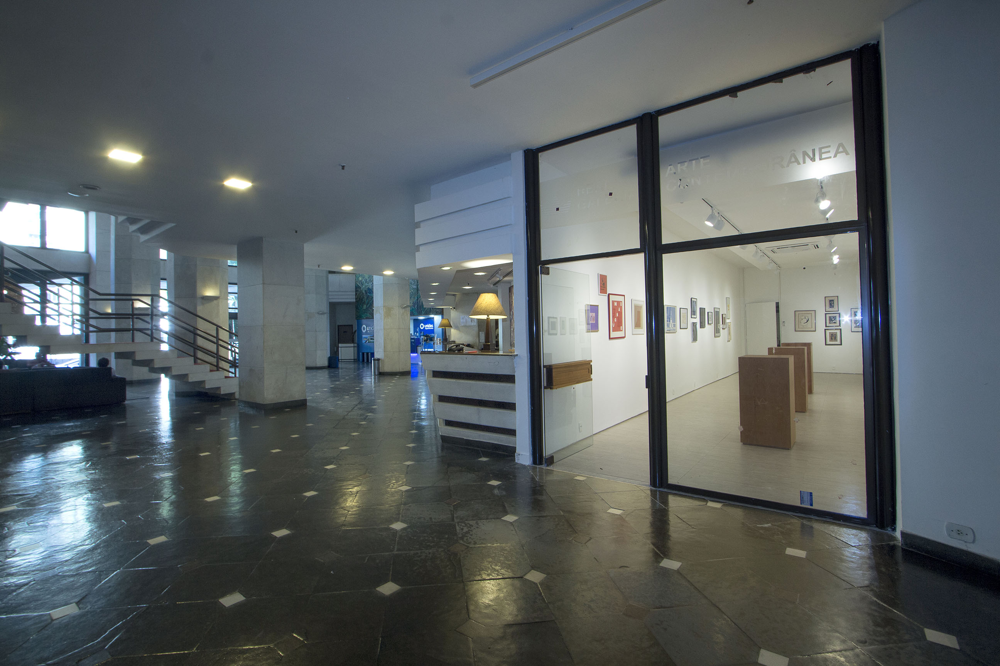

A Galeria Real Residence - Arte Contemporânea foi inaugurada em junho de 2022, dentro do Apart Hotel Real Residence, na Avenida Princesa Isabel 500, em Copacabana. A primeira mostra, "Ivan Serpa e amigos", abrangeu a obra do artista carioca, homenageando-o, no centenário de seu nascimento. A partir de então, várias exposições aconteceram no mesmo espaço, sempre privilegiando artistas brasileiros de vanguarda, entre eles escultores, pintores, fotógrafos e gravadores. Já passaram pelo local, dentre outros, os fotógrafos Oskar Sjostedt e Márcio Sued, os performistas Alexandre Dacosta e Ricardo Basbaum, os professores Alberto Kaplan e Júlio Castro, os integrantes do imaginário periférico Beneir Martins e Raimundo Rodriguez, além de uma mostra dedicada aos 40 anos da geração 80. Dentro desta perspectiva, de importância e contemporaneidade, será inaugurada em 06 de junho de 2024, a importante mostra de Eneas Valle, que já esteve na Bienal de São Paulo e é um ícone da Geração 80.
